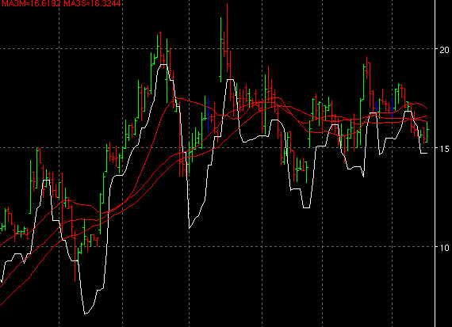

Elder's Safezone Stop - SZ

Parameters:
- Coefficient - Coefficient value
- Color - SZ plot color
- Line Type - The type of plot to draw
- Loopback Period - The loopback period to use.
- No Decline Period - The no decline period to use
- Position - The position to take, either long or short.
Description:
The "SafeZone Stop" indicator is described in Dr. Alexander
Elder's book _Come Into My Trading Room_, p.173
Alerts:
None